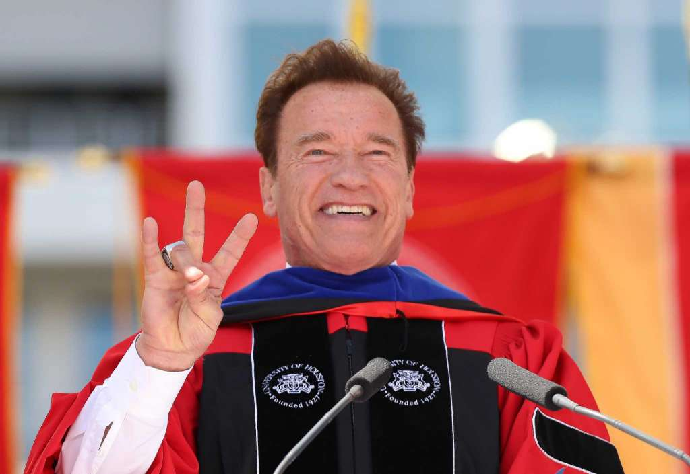
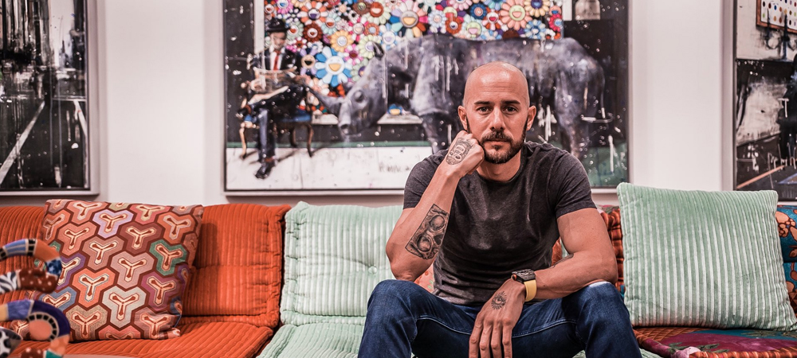

Universidad de la Sabana
Universidad de la Sabana
Para realizar el comentario de ingeniería numero dos vimos 2 videos, uno acerca de como puede ser el proceso para convertirse alguien exitoso y otro acerca de como llevar una vida organizada y ocupada también para llevarnos al éxito.
Arnold Schwarzenegger's 2017 University of Houston
Primero en el video de Arnold Schwarzenegger's, él está dando un discurso de graduación en la universidad de Houston de un poco acerca de la historia de él, que de hecho es bastante inspiradora, Arnold nos cuenta el proceso que tuvo que vivir para ser exitoso en esta vida, obviamente relacionándolo con los recién graduados, ya que dice esto para inspirarlos a ellos, y que sientan orgullosos de estar donde están , y que han llegado lejos no solo gracias a ellos mismos y por el esfuerzo propio sino que también gracias a toda esa gente que nos apoyó durante el proceso, por ejemplo darle gracias a las personas que estuvieron con nosotros estudiando, ya que de alguna manera ellos nos ayudaron en algún momento, darle gracias a los profesores que nos permitieron aprender cosas nuevas que vamos a utilizar durante nuestros próximos años, darle gracias a nuestros papas o personas que estuvieron cuidándonos durante todo ese tiempo ya que sin el esfuerzo de ellos no hubieran podido estar donde están, el punto es que tenemos que ser conscientes de que todo ese proceso por el que ellos pasaron no lo lograron solos, y que no van a estar solos el resto del tiempo, que tenemos que saber y ser agradecidos de esas personas que nos acompañaron durante todo el tiempo y que nos enseñaron cosas nuevas, que ellos están ahí gracias a ellos y a los demás, después de esta reflexión Arnold nos cuenta sobre su vida, nos cuenta que gracias a su familia él se metió en el mundo del fisicoculturismo, y que gracias al papa decidió ser el mejor entrenando muy duro día a día hasta convertirse en alguien profesional, después quiso ser actor, intento audicionar para varios proyectos pero le decías que con ese cuerpo parecía un “monstruo”, entonces aunque parezca que los papeles los logro conseguir fácil para el proceso le resulto muy difícil y fue gracias a unos amigos que el logro entrar al mundo del cine interpretando un papel muy importante en esa película llamada “Terminator” que en su momento fue una película que recaudo muchísimo dinero volviéndose muy famosa, y fue gracias literalmente al cuerpo de Arnold y que sin él la película probablemente no hubiera sido la misma. Lo importante es seguir nuestros sueños, no importa que nos intenten detener vamos a seguir adelante y lo otro es que no importante en que momento de nuestra vida estemos siempre intentemos dar lo mejor de nosotros y siempre dejemos ayudar de las demás personas.

TE DESEO MÁS CAOS DEL QUE PUEDAS AGUANTAR l DIEGO DREYFUS
En el segundo video el señor Diego Dreyfus nos da una charla también bastante inspiradora para conseguir el éxito, en el video el comienza con un tema de física y todo lo que tiene que ver con el caos, nos da una explicación bastante divertida acerca de esto, lo importante es que la física juega un papel muy importante en el mundo y en el universo sacando muchas teorías a lo largo de la historia de la física, el nos cuenta que el universo tiene una cualidad bastante especial y es que el universo es entrópico, y que la entropía del universo siempre va a aumentar, pero ¿qué es la entropía?, bueno la palabra que el utilizo para describir entropía es la palabra “caos”, ósea que el universo está en constante crecimiento de caos y que el universo en si es caótico, y esto también lo relaciona de manera didáctica hacia nuestro día a día, que no importa lo que hagamos siempre vamos a tener caos en nuestra vida lo importante esta nosotros, en que cantidad de caos podemos dejar entrar a nuestras vidas y lo mas importante como manejamos el caos en nuestras vidas, el nos da un ejemplo de que no importa si un día limpiamos nuestra casa pero al mes o los dos meses la casa esta sucia, ¿pero como va a estar sucia si no estuvimos todo ese tiempo en nuestra casa?, bueno aquí es donde entra todo ese caos del universo, ya que existe viento y existe el polvo que se va acumulando en nuestra casa y hace que se vea sucia lo importante entonces es sacar ese polvo y limpiarlo cada semana para que la casa permanezca constantemente limpia, ósea aceptar todo el caos pero saber manejarlo a tiempo para llevar una vida organizada, entonces depende nosotros recibir y aceptar el caos para llevar una vida en constante movimiento, limpiando y resolviendo de alguna manera nuestro camino, el mismo nos dice que si llevamos una vida organizada pues entre más caos para nosotros mejor ya que entre más caos más orden, porque si tenemos arto caos tenemos que resolverlo de alguna manera empezando por aceptarlo y que no podemos cambiar nada acerca de eso entonces lo mejor es recibirlo y a resolver de como lo ordenamos, también nos habla un poco de la frase que dicen en México “ chamba es chamba” que en resumido quiere decir que eso es lo que me toco y eso es lo que hago y que no hay de otra, el afirma que si hay mas que no hay que quedarnos conformes con eso sino que también el orden empieza a cambiar algunos pensamientos de nosotros y dejar de ser tan conformistas con todo sino que buscar que hacer y tener en cuenta que realmente si importa lo que hago y que me debe hacer feliz, así es como el termina esta pequeña charla deseándonos mucho mas caos del que podamos aguantar.

¿Como lo relaciono con mi futuro?
Esto me ayuda bastante a conocer un poco sobre de que se trata el mundo real, que nada es fácil y que me tengo que esforzar por lo que quiero es por eso que de alguna manera esto me ayuda a mi mismo a crecer tanto como persona como en la parte profesional, en mi caso que estoy estudiando ingeniería informática y quiero cumplir sueños ya que también tengo algunas metas de corto y largo plazo que me ayudan a seguir de pie con todos esos problemas que pasan diariamente y pues gracias a lo que vi de los videos es necesario contar con ayuda de quien pueda, ya sean personas de confianza y eso, por ejemplo en mi caso que quiero crear mi propia empresa sé que va a ser muy difícil que probablemente vaya a tener muchísimos problemas para lograrlo, sin embargo si tengo esa meta clara voy a seguir de pie, y que no importa lo difícil que sea y no importa si tengo los conocimientos suficientes siempre voy a necesitar la ayuda de alguien que me ayude ver la realidad de otra manera, porque probablemente yo vea el camino de una forma que no es la más rápida por decirlo así y que la otra persona vea el mismo camino pero de forma más rápida, no necesariamente más fácil si no que es que tampoco me puedo complicar con algo en lo que no es necesario complicarme, así que en mi futuro esto me va a ayudar bastante aunque ahorita hasta ahora estoy comenzando pues en algún momento de mi vida voy a estar en el lugar de los graduados y voy a empezar a mirar el mundo de otra manera ya que va a depender de mi como voy a maneja mi vida, si decido vivir con problemas o aceptar los problemas y mirar como los soluciono, entonces todo esto me ayuda de hecho desde ya, ya que puedo trabajar en quipo para realizar trabajos, puedo apoyarme de un compañero para que me explique algunos temas y eso que yo aun no he entendido, no necesariamente hablo de depender de los demás, si no que tengo que ser consiente de que si no puedo con algo pues de alguna manera voy a buscar ayuda para poder entenderlo mejor.
Bueno al final estos dos videos ayudan muchísimo en cambiar nuestra forma de pensar para obtener resultados positivos a largo plazo, al final siempre vamos a estar en un momento de nuestras vidas donde vamos a tener varios problemas y no meternos en la cabeza de que tenemos varios problemas y que no vamos a salir adelante con nada y que no podemos, pues eso es lo que no se debe y lo mejor es que debemos aceptar esos problemas y más bien concentrarnos en como podemos resolver esos problemas sin necesidad de dañar a las demás personas y mas bien aceptar la ayuda de quienes nos puedes ayudar ya que aunque no queramos una de las formas de salir adelante es dejarnos ayudar y lo más importante ayudar a quienes nos necesitan porque tampoco podemos ser unos inútiles en esta vida, que si vamos a hacer algo no importa que tenemos que ser lo mejores y ser bastante útil para los demás o sino no vamos a lograr nada en esta vida, también concluimos que no importa lo mucho que luchemos para un objetivo tenemos que dar lo mejor siempre, si nos volvemos a caer volvernos a levantar y seguir intentando aunque hayan personas que nos digan que no podemos, entonces al final solo nos va a quedar las personas que nos apoyaron durante todo el proceso y los momentos difíciles y nos va a quedar esa sensación de que hicimos algo por el mundo y que logramos algo como meta propia entonces ahí es cuando sabemos que hicimos las cosas bien y no nos vamos a arrepentir de absolutamente nada ya que todo lo que vamos a hacer es para beneficio de los demás y beneficio propio porque también se trata de crecer mentalmente y alcanzar una madurez muy grande para aceptar algunas cosas.
Arnold Schwarzenegger. Arnold Schwarzenegger's 2017 University of Houston Commencement Address. (16 de mayo de 2017). https://www.youtube.com/watch?v=RJsvR_gSEjg.
DIEGO DREYFUS. TE DESEO MÁS CAOS DEL QUE PUEDAS AGUANTAR l DIEGO DREYFUS. (2 de enero de 2018). https://www.youtube.com/watch?v=vIgtl27hQmk.